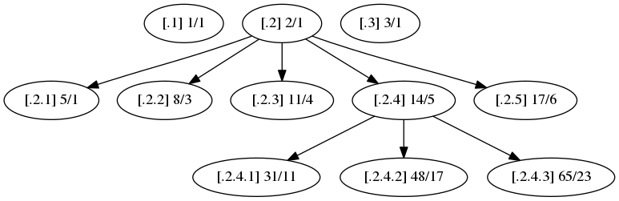

Nested Sets II: Optimizing with Rational Keys
Intro
What is a Tree
What is a Nested Set?
A way of representing heirarichal data…
As a flat structure
(left=1 right=2 value=.1) (left=3 right=20 value=.2) (left=21 right=22 value=.3) (left=4 right=5 value=.2.1) (left=6 right=7 value=.2.2) (left=8 right=9 value=.2.3) (left=10 right=17 value=.2.4) (left=18 right=19 value=.2.5) (left=11 right=12 value=.2.4.1) (left=13 right=14 value=.2.4.2) (left=15 right=16 value=.2.4.3)
Allowing O(n) lookups of subtrees
select * from "nested_sets" where left >= 10 and right <= 17
- + cost to reconstruct tree in memory O(n)
- can be improved if depth is stored.
No free lunch
Inserts and deletions are expensive
Inserting one node means updating the right value of all nodes above, and to our right
and updating the left value of all nodes to our right.
Why do I care?
Solidus uses the nested set model to store taxon information.
What is a Rational Number?
First, integers

Integers are countably infinite
Rationals
 Rationals are uncountably infinite. There is an infinite number of rationals between 0 and 1.
Rationals are uncountably infinite. There is an infinite number of rationals between 0 and 1.
Using rationals instead of integers for left and right keys

Use a single node key
Node Key
We can write the node as [TreePosition]nv/dv
Determining nv and dv

How do we use this to our advantage?
As you might recall the problem with nested sets was that every insert required updating the keys.
Bibliography
- Hazel, D. (2008). Using rational numbers to key nested sets. CoRR, abs/0806.3115.